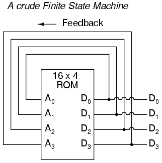
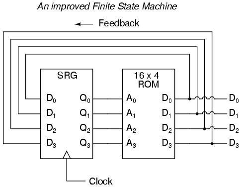
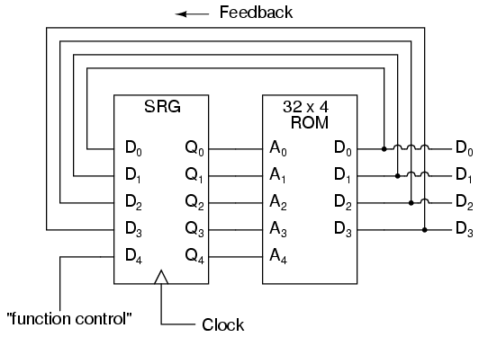
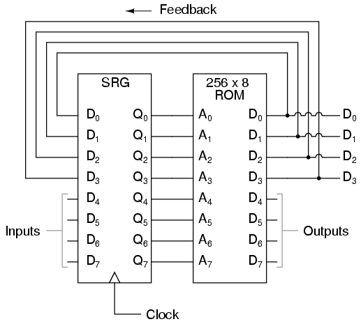

The original, as published: Tony R. Kuphaldt, Lessons In Electric Circuits, Finite-state machines. CC BY 4.0, https://creativecommons.org/licenses/by/4.0/. Imported as published, from https://www.ibiblio.org/kuphaldt/electricCircuits/Digital/DIGI_16.html https://www.ibiblio.org/kuphaldt/electricCircuits/Digital/DIGI_16.html
Feedback is a fascinating engineering principle. It can turn a rather simple device or process into something substantially more complex. We've seen the effects of feedback intentionally integrated into circuit designs with some rather astounding effects:
In the field of process instrumentation, feedback is used to transform a simple measurement system into something capable of control:
Feedback, both positive and negative, has the tendency to add whole new dynamics to the operation of a device or system. Sometimes, these new dynamics find useful application, while other times they are merely interesting. With look-up tables programmed into memory devices, feedback from the data outputs back to the address inputs creates a whole new type of device: the Finite State Machine, or FSM:

The above circuit illustrates the basic idea: the data stored at each address becomes the next storage location that the ROM gets addressed to. The result is a specific sequence of binary numbers (following the sequence programmed into the ROM) at the output, over time. To avoid signal timing problems, though, we need to connect the data outputs back to the address inputs through a 4-bit D-type flip-flop, so that the sequence takes place step by step to the beat of a controlled clock pulse:

An analogy for the workings of such a device might be an array of post-office boxes, each one with an identifying number on the door (the address), and each one containing a piece of paper with the address of another P.O. box written on it (the data). A person, opening the first P.O. box, would find in it the address of the next P.O. box to open. By storing a particular pattern of addresses in the P.O. boxes, we can dictate the sequence in which each box gets opened, and therefore the sequence of which paper gets read.
Having 16 addressable memory locations in the ROM, this Finite State Machine would have 16 different stable "states" in which it could latch. In each of those states, the identity of the next state would be programmed in to the ROM, awaiting the signal of the next clock pulse to be fed back to the ROM as an address. One useful application of such an FSM would be to generate an arbitrary count sequence, such as Gray Code:
Address -----> Data Gray Code count sequence: 0000 -------> 0001 0 0000 0001 -------> 0011 1 0001 0010 -------> 0110 2 0011 0011 -------> 0010 3 0010 0100 -------> 1100 4 0110 0101 -------> 0100 5 0111 0110 -------> 0111 6 0101 0111 -------> 0101 7 0100 1000 -------> 0000 8 1100 1001 -------> 1000 9 1101 1010 -------> 1011 10 1111 1011 -------> 1001 11 1110 1100 -------> 1101 12 1010 1101 -------> 1111 13 1011 1110 -------> 1010 14 1001 1111 -------> 1110 15 1000
Try to follow the Gray Code count sequence as the FSM would do it: starting at 0000, follow the data stored at that address (0001) to the next address, and so on (0011), and so on (0010), and so on (0110), etc. The result, for the program table shown, is that the sequence of addressing jumps around from address to address in what looks like a haphazard fashion, but when you check each address that is accessed, you will find that it follows the correct order for 4-bit Gray code. When the FSM arrives at its last programmed state (address 1000), the data stored there is 0000, which starts the whole sequence over again at address 0000 in step with the next clock pulse.
We could expand on the capabilities of the above circuit by using a ROM with more address lines, and adding more programming data:

Now, just like the look-up table adder circuit that we turned into an Arithmetic Logic Unit (+, -, x, / functions) by utilizing more address lines as "function control" inputs, this FSM counter can be used to generate more than one count sequence, a different sequence programmed for the four feedback bits (A0 through A3) for each of the two function control line input combinations (A4 = 0 or 1).
Address -----> Data Address -----> Data 00000 -------> 0001 10000 -------> 0001 00001 -------> 0010 10001 -------> 0011 00010 -------> 0011 10010 -------> 0110 00011 -------> 0100 10011 -------> 0010 00100 -------> 0101 10100 -------> 1100 00101 -------> 0110 10101 -------> 0100 00110 -------> 0111 10110 -------> 0111 00111 -------> 1000 10111 -------> 0101 01000 -------> 1001 11000 -------> 0000 01001 -------> 1010 11001 -------> 1000 01010 -------> 1011 11010 -------> 1011 01011 -------> 1100 11011 -------> 1001 01100 -------> 1101 11100 -------> 1101 01101 -------> 1110 11101 -------> 1111 01110 -------> 1111 11110 -------> 1010 01111 -------> 0000 11111 -------> 1110
If A4 is 0, the FSM counts in binary; if A4 is 1, the FSM counts in Gray Code. In either case, the counting sequence is arbitrary: determined by the whim of the programmer. For that matter, the counting sequence doesn't even have to have 16 steps, as the programmer may decide to have the sequence recycle to 0000 at any one of the steps at all. It is a completely flexible counting device, the behavior strictly determined by the software (programming) in the ROM.
We can expand on the capabilities of the FSM even more by utilizing a ROM chip with additional address input and data output lines. Take the following circuit, for example:

Here, the D0 through D3 data outputs are used exclusively for feedback to the A0 through A3 address lines. Date output lines D4 through D7 can be programmed to output something other than the FSM's "state" value. Being that four data output bits are being fed back to four address bits, this is still a 16-state device. However, having the output data come from other data output lines gives the programmer more freedom to configure functions than before. In other words, this device can do far more than just count! The programmed output of this FSM is dependent not only upon the state of the feedback address lines (A0 through A3), but also the states of the input lines (A4 through A7). The D-type flip/flop's clock signal input does not have to come from a pulse generator, either. To make things more interesting, the flip/flop could be wired up to clock on some external event, so that the FSM goes to the next state only when an input signal tells it to.
Now we have a device that better fulfills the meaning of the word "programmable." The data written to the ROM is a program in the truest sense: the outputs follow a pre-established order based on the inputs to the device and which "step" the device is on in its sequence. This is very close to the operating design of the Turing Machine, a theoretical computing device invented by Alan Turing, mathematically proven to be able to solve any known arithmetic problem, given enough memory capacity.